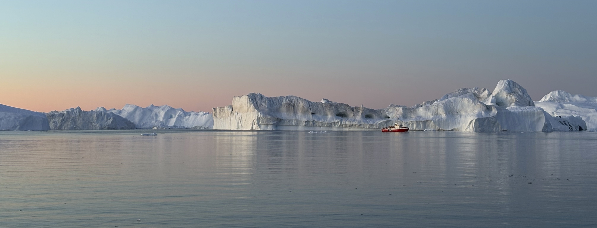
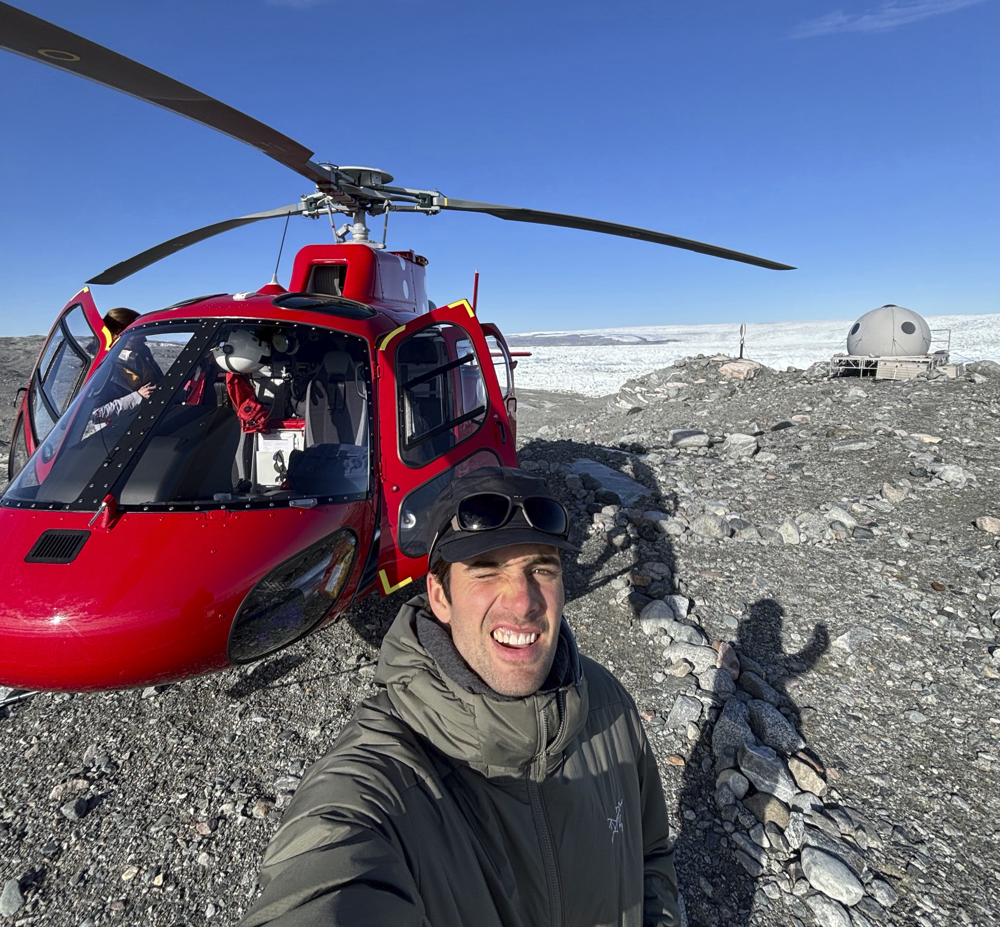

Hello! I'm Finn - a PhD student working towards a degree in Physical Oceanography. I graduated with a degree in Physics from Middlebury College in 2024. During my undergraduate studies, I decided I wanted to solve physical problems that were tied to a changing climate system. Since that moment I have been a part of Lizz Ultee's lab at Middlebury and, more recently, Caroline Ummenhofer's group at Woods Hole Oceanographic Institution.
I am interested in using large datasets and computational tools to understand changes in dynamic systems (like the ocean) and connect these observed or modeled changes to impacts on ecosystems, local populations, and livelihoods. I spend a lot of time writing python code to do this. I also spend a lot of time surfing around New England, skiing (at home, in Montana or in Vermont/New Hampshire), and taking on little projects. Welcome to my work world. Feel free to reach out :)